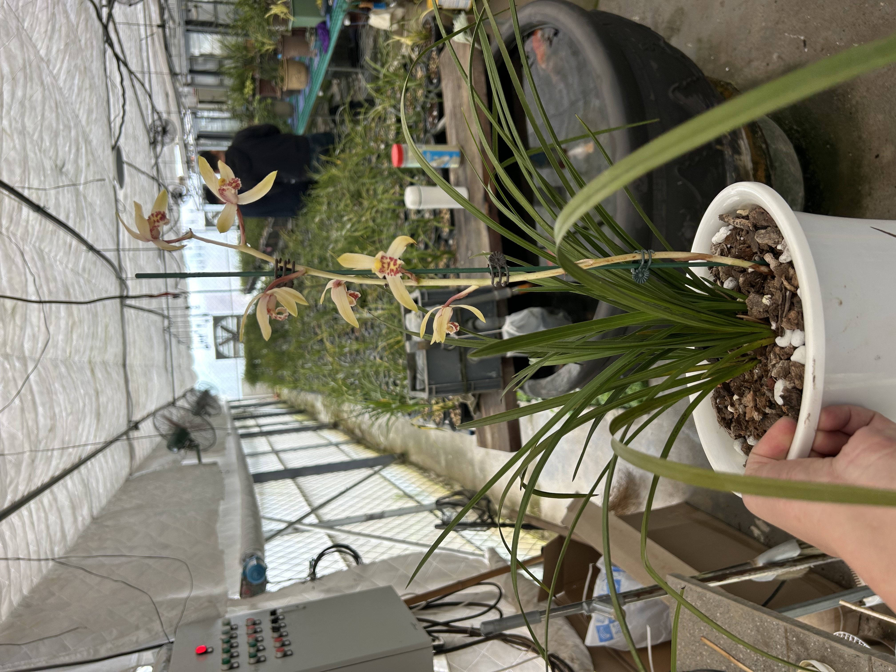
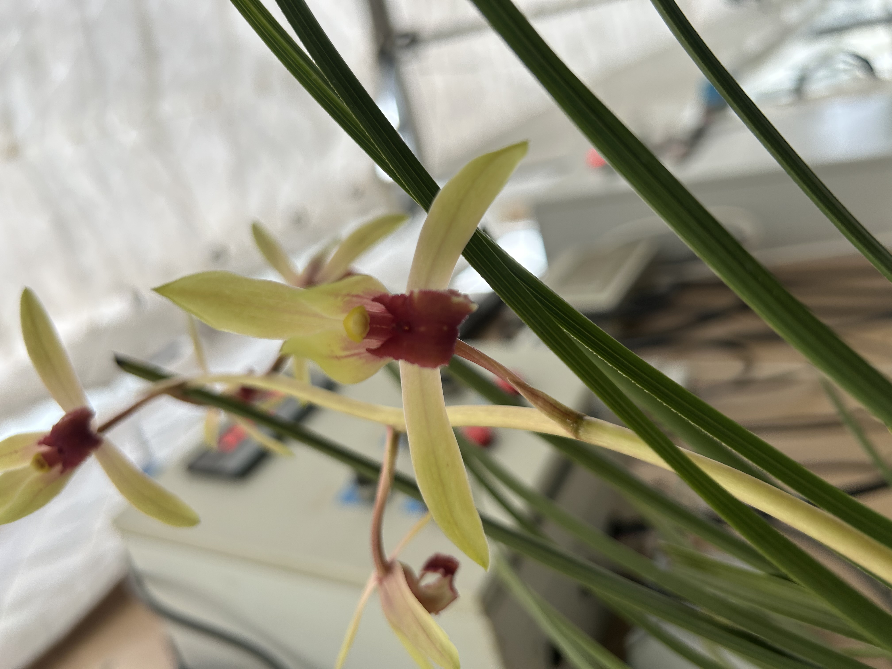
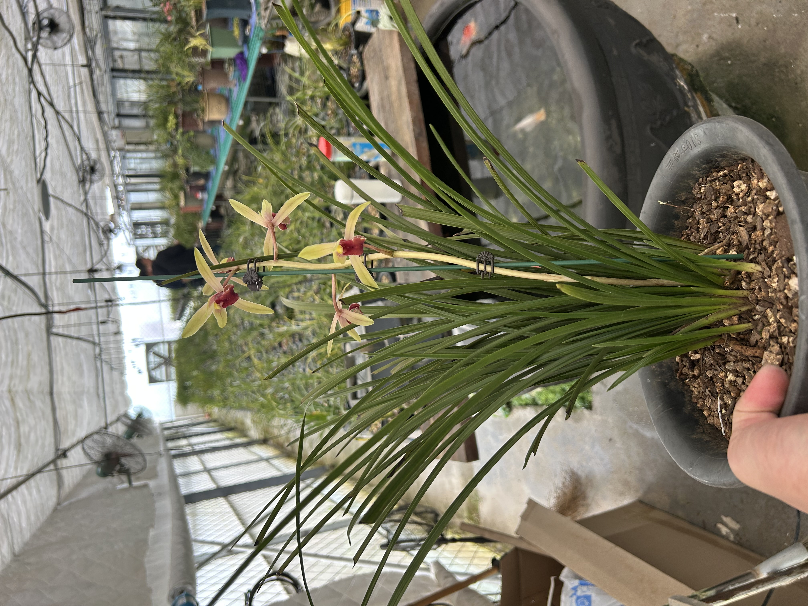

Huilan (Cymbidium faberi): The Fragrant Chinese Orchid with Noble Character
Published: July 28, 2026 | Category: Orchid Species

In the world of Chinese orchids, Huilan occupies a special place of honor. Known for its tall, elegant flower spikes bearing multiple blossoms, this orchid embodies a different kind of beauty from its close relative, Chunlan. Where Chunlan is subtle and intimate, Huilan is generous and dignified — a plant that commands attention without demanding it.
Species Profile
| Common Name | Huilan / Chinese Cymbidium (蕙兰) |
| Scientific Name | Cymbidium faberi |
| Family | Orchidaceae |
| Native Range | China (central and eastern provinces) |
| Bloom Season | Mid-spring (April–May) |
| Conservation Status | Widely cultivated; some wild populations protected |

Appearance and Characteristics
Huilan is a larger, more vigorous plant than Chunlan, with several distinguishing features that make it immediately recognizable to experienced growers. Its leaves are longer and broader, reaching 40–70 centimeters in length, with a somewhat more erect growth habit. The leaf color is a deeper green, and the texture is slightly thicker and more substantial.
The most striking difference is in the flowers. Unlike Chunlan, which typically produces a single bloom per stem, Huilan's flower spikes rise proudly to 40–60 centimeters, carrying 5–12 individual flowers. This abundance of blossoms creates a magnificent display when the plant is in full bloom, earning Huilan the reputation of being the most "generous" of the Chinese cymbidiums.
The individual flowers of Huilan are similar in form to Chunlan but tend to be slightly larger, with a more pronounced yellow or greenish-yellow coloration. The lip is typically marked with deep purple or maroon spots, creating a striking contrast with the pale petals. The fragrance of Huilan is stronger and more penetrating than Chunlan's — still subtle by modern standards, but unmistakably present and deeply pleasing.

Huilan in Chinese Culture
Huilan's name contains the character hui (蕙), which in classical Chinese means "fragrant" or "virtuous." In traditional culture, the phrase huixin (蕙心), or "Huilan heart," is used to describe a person of refined character and generous spirit. This linguistic connection between the orchid and human virtue shows how deeply Huilan is woven into the cultural fabric of China.
In Chinese painting and literature, Huilan has been admired for its "noble character" (高洁, gaojie) — a quality that combines dignity, purity, and moral integrity. While Chunlan represents the quiet scholar who cultivates virtue in solitude, Huilan represents the cultivated person who engages with the world while maintaining their principles. This distinction has made Huilan a favorite subject for artists and writers seeking to express ideals of social grace combined with inner strength.
As we explored in The Spirit of Chinese Orchids, the connection between orchids and human character is central to Chinese orchid culture. Huilan, with its abundant blossoms and generous fragrance, adds the dimension of graciousness to the orchid's symbolic vocabulary.
Fragrance and Appreciation
In the Chinese tradition of orchid appreciation, Huilan is judged by the same criteria as all Chinese cymbidiums, but the emphasis differs. The abundance of flowers means that the overall arrangement of the flower spike — the spacing of blooms, the angle of the stem, the balance of the whole — becomes an important factor. A well-displayed Huilan in bloom is a study in natural harmony.
Huilan's fragrance, while stronger than Chunlan's, is still unmistakably a youxiang (幽香) — a deep, refined fragrance that does not assault the senses but invites quiet contemplation. Experienced growers can identify a Huilan by its scent alone, a skill that is highly regarded in traditional Chinese orchid circles.
Growing Huilan at Home
Huilan's growing requirements are similar to Chunlan's but with a few important differences. Because of its larger size, Huilan needs more space — both for its roots (a larger pot) and for its leaves (room to spread). It also needs slightly more water and fertilizer during the growing season to support its vigorous growth.
- Light — Bright, indirect light. More tolerant of direct morning sun than Chunlan.
- Temperature — Cool to moderate. Requires a winter rest period at 0–10°C (32–50°F).
- Water — Keep evenly moist during growth, drier in winter. Responds well to regular watering.
- Potting — Needs a larger pot than Chunlan. Repot every 2–3 years in fresh terrestrial orchid mix.
For detailed growing guidance, see How to Grow Orchids at Home and How to Water Orchids Correctly.
Huilan Around the World
Like Chunlan, Huilan has found admirers beyond China's borders. Its larger size and more abundant blooms make it particularly appealing for exhibition, and Huilan specimens often win awards at international orchid shows. In Japan, where Chinese cymbidiums are also deeply appreciated, Huilan has been cultivated for centuries and is known as shunran. In Korea, it is called chunran and is similarly valued in traditional garden culture.
For Western growers, Huilan offers an entry point into Chinese orchid culture that is somewhat more forgiving than Chunlan — its larger size and more robust growth make it a satisfying plant for those with a little space to dedicate. Once experienced with Huilan, many growers find themselves drawn to explore the more subtle charms of other Chinese cymbidiums.
Conclusion
Huilan stands as a bridge between the intimate beauty of Chunlan and the more expansive world of orchid cultivation. With its tall flower spikes, abundant blossoms, and generous fragrance, it represents the ideal of refined abundance — a quality that Chinese culture has admired for centuries. Whether you are new to Chinese orchids or an experienced collector, Huilan offers a rewarding and deeply satisfying growing experience.
Explore our Chinese Orchid Species Guide for an overview of all major species, or visit Orchid Culture to discover the rich traditions behind these remarkable plants.